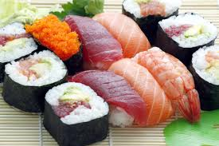
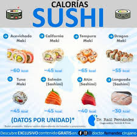

SUSHI

TIPOS
Los principales tipos de sushi son el maki (rollo con alga por fuera), el uramaki (rollo con arroz por fuera), el nigiri (bola de arroz con un trozo de pescado encima) y el sashimi (láminas de pescado crudo sin arroz). Existen otras variantes como el temaki (cono de alga) y el chirashi (arroz esparcido con ingredientes encima).
SABORES
Puedes encontrar rollos con pescados (salmón, atún, anguila), mariscos (camarón, pulpo, cangrejo), verduras (aguacate, pepino, mango), y combinaciones como la de salmón con queso crema (Philadelphia Roll). También hay opciones picantes (Spicy Tuna Roll), fritas (hot roll), y con otros rellenos como carne, huevo o tofu frito.
RECOMENDACIONES
Maki Rolls: Pequeños, sencillos y sabrosos. ... Nigiri: Una base de arroz con sabor delicado. ... Gunkan: Sashimi con queso crema. ... Noodles: Unos fideos siempre son acierto. ... Gyozas: Unas empanadillas que gustan a todos. ... Atrévete a coger los palillos.
APORTACION NUTRIMENTAL EN GENERAL
Proteínas: El pescado (salmón, atún) es una fuente principal de proteína magra. Grasas saludables: El pescado y el aguacate aportan grasas omega-\(3\) y otras grasas buenas. Carbohidratos: El arroz de sushi proporciona carbohidratos para la energía. Es importante recordar que a menudo se le añade azúcar. Fibra, vitaminas y minerales: El alga nori aporta fibra, calcio y vitaminas (\(E\), \(K\), grupo \(B\)). Las verduras como el pepino y la zanahoria también añaden fibra y nutrientes. Yodo: El alga nori es una fuente de yodo, un mineral importante para el cuerpo.
| TIPO DE SUSHI | INCREDIENTES PRINCIPALES | SABOR Y TEXTURA |
| Nigiri | Arroz de sushi avinagrado y una pieza de pescado o marisco fresco de alta calidad, como salmón, atún o camarón. A veces, lleva una pizca de wasabi entre el arroz y el pescado. | El arroz avinagrado aporta un toque ligeramente dulce y ácido que complementa la frescura del pescado, puede ser desde la delicada y tierna del salmón hasta la más firme del atún. |
| Uramaki (rollo invertido) | Alga nori, arroz de sushi, y rellenos variados como aguacate, pepino, queso crema, cangrejo o tempura. El ejemplo más conocido es el rollito de California. | . Es una mezcla de lo salado del alga nori, lo dulce y ácido del arroz, y lo cremoso del aguacate o el queso, con el toque umami del pescado. La textura es suave por fuera gracias al arroz, a menudo con un toque crujiente adicional por las semillas de sésamo o las huevas de pescado que lo recubren. |